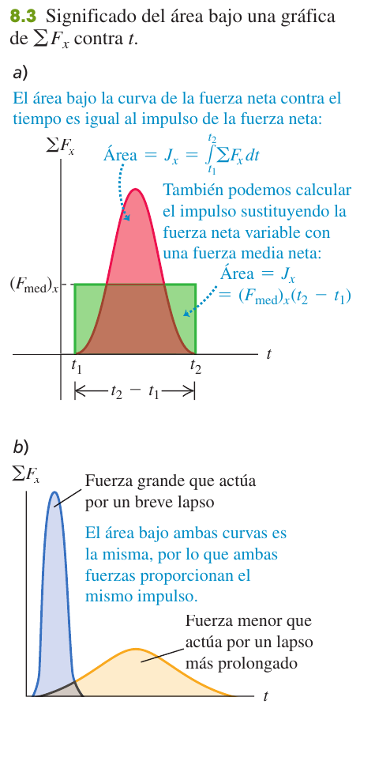
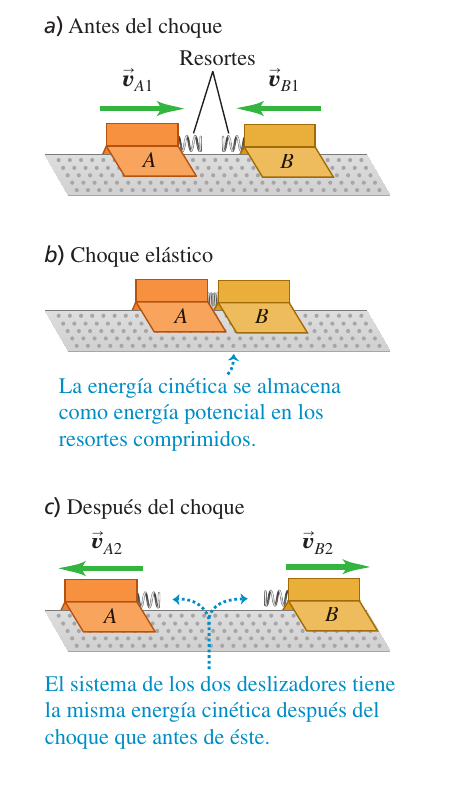
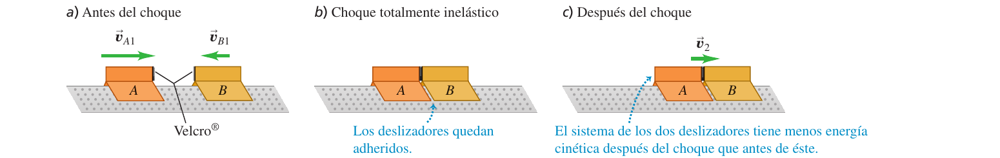
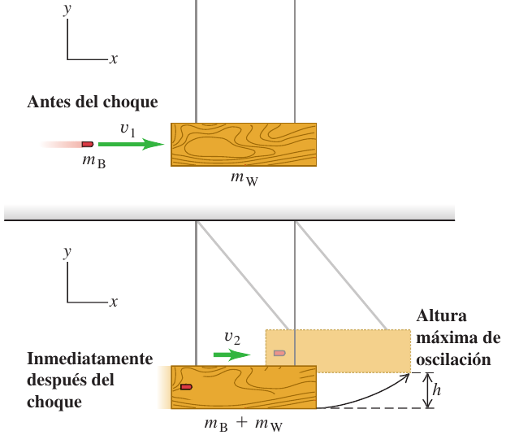
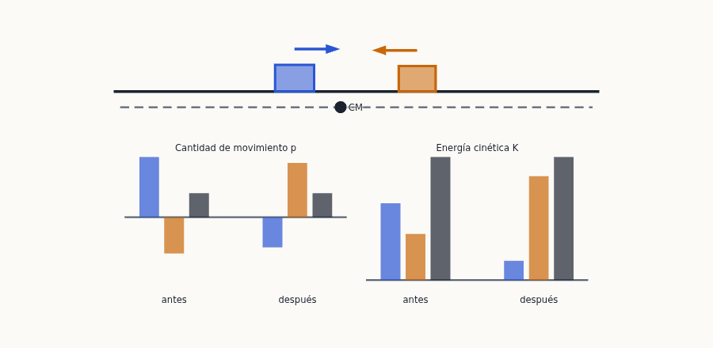
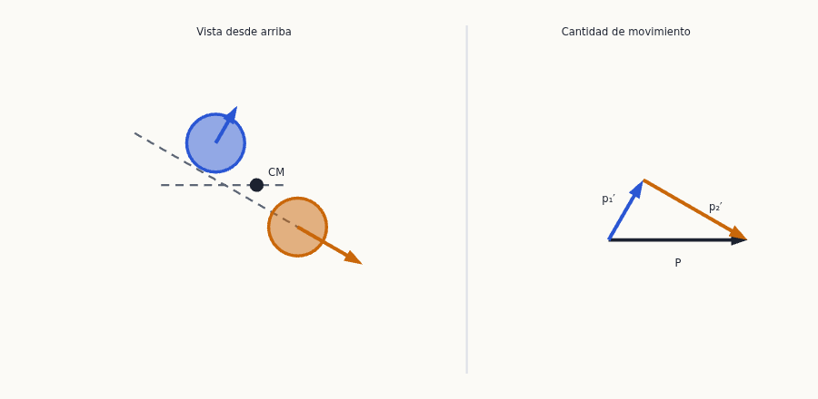
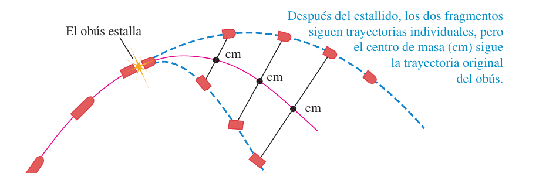
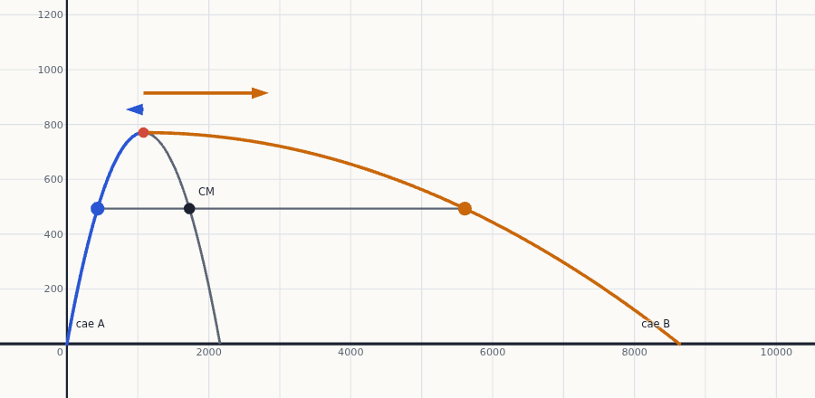
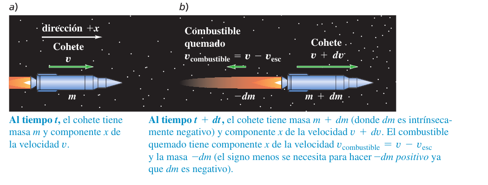

Cantidad de movimiento, impulso y colisiones
Hasta ahora has resuelto el movimiento con fuerzas (tema 5) o con energía (temas 6 y 7). Aquí aparece la tercera herramienta, la más útil cuando dos cuerpos interactúan de golpe: la cantidad de movimiento. Sirve para saber qué ocurre tras un choque o una explosión sin conocer las fuerzas, para entender por qué el centro de masa «ignora» las fuerzas internas y para ver cómo funciona un cohete.
0Antes de empezar U p.238
Prerrequisitos: los vectores y sus componentes (tema 1); la segunda y la tercera leyes de Newton, en especial que las fuerzas de acción y reacción son iguales y opuestas (tema 4); el teorema trabajo-energía y la energía cinética $K=\tfrac12mv^2$ (tema 6); la conservación de la energía con resortes y alturas (tema 7), que aparece en varios problemas después del choque; el movimiento de proyectiles (tema 3), para los fragmentos de una explosión; y, solo en un ejercicio de examen, el periodo del oscilador $T=2\pi\sqrt{m/k}$ (tema 14).
Mapa del tema: 8.1 define la cantidad de movimiento $\vec p=m\vec v$ y el impulso $\vec J=\int\sum\vec F\,dt$, unidos por el teorema $\vec J=\Delta\vec p$. 8.2 enuncia la conservación de la cantidad de movimiento de un sistema aislado. 8.3 clasifica los choques y resuelve los totalmente inelásticos (los cuerpos quedan unidos); 8.4, los elásticos, donde además se conserva la energía cinética. 8.5 introduce el centro de masa, que se mueve como una partícula sometida solo a las fuerzas externas. 8.6 trata el cohete, un sistema cuya masa cambia.
El índice de exámenes asigna a este tema nueve preguntas: cinco problemas (choque helio-oxígeno, explosión de un cohete de fuegos artificiales, masa que cae sobre una bandeja con resorte, cohete con masa variable y varilla con pivote golpeada por una bala) y cuatro de teoría (centro de masa, choques elásticos, conservación del momento lineal con cuestiones, y el momento lineal de un patinador). Todas están resueltas abajo; además hay nueve ejercicios del solucionario de U:
| Pregunta de examen real | Ejercicio de esta página |
|---|---|
| Feb 2018 (2ª sem.) P-1 — choque de un átomo de helio con una molécula de oxígeno en reposo: velocidad de la molécula y fracción de energía cinética perdida | X1 |
| Feb 2020 (1ª sem.) P-2 — cohete de fuegos artificiales que estalla en su altura máxima (= problema 8.97 de U): velocidades y distancia entre los puntos de caída | X2 |
| Feb 2022 (1ª sem.) P-1 — masa que cae sobre una bandeja colgada de un resorte (choque perfectamente inelástico y movimiento armónico simple posterior) | X3 |
| Feb 2019 (2ª sem.) P-1 — cohete con empuje proporcional a su masa y gravedad variable: altura a los 60 s | X4 |
| Feb 2018 (2ª sem.) P-3 Opción 3.1 — teoría «Centro de masa de un sistema de partículas. Su movimiento. Conservación del momento lineal» | X5 |
| Feb 2019 (2ª sem.) P-3 Opción 3.2 — teoría «Choques elásticos» | X6 |
| Feb 2022 (2ª sem.) P-3 Opción 3.1 — teoría «Conservación del momento lineal o de la cantidad de movimiento» + juguete que se divide en tres piezas y balas que rebotan o se aplastan | X7 |
| Sep 2019 P-1 — varilla con pivote golpeada por una bala que se incrusta: momento angular (tema 10), cantidad de movimiento antes y después y energía perdida | X9 |
| Sep 2023 P-3 Opción A, cuestión (b) — ¿se conserva el momento lineal de un patinador en el aire? | X8 |
Lo que viene: en el tema 9 y el 10 el cuerpo deja de ser un punto y puede girar; allí aparecerá el momento angular, que se conserva con reglas parecidas (y es la otra cara de la pregunta del patinador).
X- Define el sistema y mira las fuerzas externas. Si durante el choque (muy breve) las fuerzas externas son despreciables frente a las internas, o su suma es cero, la cantidad de movimiento total se conserva. La fricción con el suelo, el peso o un resorte aún sin comprimir no impiden usarla durante un choque instantáneo.
- Dibuja «antes» y «después», con ejes, el sentido positivo y los símbolos (subíndices 1 y 2 para antes y después). Una velocidad que va hacia el sentido negativo lleva signo menos.
- Escribe una ecuación por componente: $\sum m\,v_x$ antes $=\sum m\,v_x$ después, y lo mismo en $y$. Nunca sumes módulos de cantidades de movimiento que no sean paralelas.
- Decide el tipo de choque y añade la ecuación que falta: elástico $\Rightarrow$ se conserva $K$ (o $v_{rel}$ cambia de signo); totalmente inelástico $\Rightarrow$ misma velocidad final; inelástico $\Rightarrow$ te dan un dato (una velocidad final, la pérdida de $K$ o $e$).
- Resuelve el sistema. Si el problema sigue después del choque (un resorte, un péndulo, un proyectil), cambia de herramienta: energía o cinemática desde el estado justo tras el choque. Nunca uses la energía a través de un choque inelástico.
- Evalúa: $\vec P$ antes $=\vec P$ después; $K$ después $\le K$ antes (salvo explosiones, donde sube); signos y direcciones razonables.
En los ejercicios de examen que no dan $g$ se usa $g=9{,}8\ \text{m/s}^2$ (con 9,81 las cifras significativas no cambian). En el examen de la bandeja con resorte se entiende, como dice el enunciado, que la masa deformable queda pegada a la bandeja.
P1Cantidad de movimiento e impulso U p.238
¿Qué es más difícil de parar con la mano: una pelota de ping-pong a 20 m/s o una bola de bolos a la misma rapidez? Claramente la de bolos: tiene más masa. ¿Y una bola de bolos que rueda despacio frente a otra que va muy deprisa? Cuenta también la rapidez. La cantidad de movimiento (también «momento lineal» o «momentum») es justo eso: una medida de «cuánto movimiento lleva» un cuerpo, que mezcla masa y velocidad, y que además apunta hacia donde va.
El otro ingrediente es el impulso: un «empujón» medido como fuerza por el tiempo que actúa. Un empujón largo y suave cambia la cantidad de movimiento lo mismo que uno corto y brutal. Por eso al aterrizar de un salto doblas las rodillas (alargas el tiempo de frenado y la fuerza baja) y por eso existen las bolsas de aire.
U p.238-240La cantidad de movimiento de una partícula de masa $m$ y velocidad $\vec v$ es el vector $$\vec p=m\vec v\qquad\text{(ec. 8.2)}\qquad\Longleftrightarrow\qquad p_x=mv_x,\ \ p_y=mv_y,\ \ p_z=mv_z\quad\text{(ec. 8.3)}$$ Tiene la dirección y el sentido de $\vec v$; su unidad es kg·m/s. La segunda ley de Newton, en la forma en que Newton la escribió, dice que la fuerza neta es la rapidez de cambio de la cantidad de movimiento: $$\sum\vec F=\frac{d\vec p}{dt}\qquad\text{(ec. 8.4)}$$ (con masa constante coincide con $\sum\vec F=m\vec a$). Vale solo en sistemas de referencia inerciales.
U p.238Si la fuerza neta es constante durante un intervalo $\Delta t=t_2-t_1$, el impulso es $\vec J=\sum\vec F\,\Delta t$ (ec. 8.5). Si varía, $\vec J=\int_{t_1}^{t_2}\sum\vec F\,dt$ (ec. 8.7), y se puede escribir con una fuerza media, $\vec J=\vec F_{med}\,\Delta t$ (ec. 8.8). Unidad: N·s = kg·m/s. El teorema impulso–cantidad de movimiento afirma que $$\vec J=\vec p_2-\vec p_1=\Delta\vec p\qquad\text{(ec. 8.6)}$$ Por componentes (ec. 8.9): $J_x=(F_{med})_x\,\Delta t=mv_{2x}-mv_{1x}$, e igual en $y$ y $z$. En una gráfica $\sum F_x$–$t$, el impulso es el área bajo la curva.
U p.239-240
Las dos dependen de $m$ y $v$, pero responden a preguntas distintas. El teorema $\vec J=\Delta\vec p$ dice que la cantidad de movimiento cambia con el impulso, es decir, con la fuerza por el tiempo. El teorema $W=\Delta K$ (tema 6) dice que la energía cinética cambia con el trabajo, es decir, con la fuerza por la distancia. Dos pelotas, de 0,50 kg a 4,0 m/s y de 0,10 kg a 20 m/s, tienen el mismo $p=2{,}0$ kg·m/s (necesitan el mismo impulso para pararlas), pero $K=4{,}0$ J y $20$ J: detener la rápida exige cinco veces más trabajo, y tu brazo retrocede cinco veces más.
U p.240Dos veleros de masas $m$ y $2m$, en un lago helado sin fricción, parten del reposo con la misma fuerza horizontal constante $F$ y cruzan la meta a una distancia $s$. El trabajo $Fs$ es el mismo, así que llegan con la misma energía cinética. Pero el de masa $2m$ acelera menos y tarda más: recibe más impulso $F\Delta t$, luego llega con más cantidad de movimiento. Como $p=\sqrt{2mK}$ y $K$ es la misma, el velero de masa $2m$ lleva $\sqrt2$ veces más cantidad de movimiento.
U p.241Una pelota de 0,40 kg llega horizontalmente a 30 m/s hacia la izquierda y rebota a 20 m/s hacia la derecha. a) ¿Impulso de la fuerza neta? b) Si el contacto dura 0,010 s, ¿fuerza media?
- Elige $+x$ hacia la derecha. Entonces $p_{1x}=(0{,}40)(-30)=-12$ kg·m/s y $p_{2x}=(0{,}40)(+20)=+8{,}0$ kg·m/s.
- Por (8.9): $J_x=p_{2x}-p_{1x}=8{,}0-(-12)=20$ kg·m/s $=20$ N·s, hacia la derecha: es el «empujón» que da la pared.
- Por (8.8): $(F_{med})_x=J_x/\Delta t=20/0{,}010=2000$ N, el peso de unos 200 kg. Muy superior al peso de la pelota (3,9 N), por lo que durante el choque se pueden ignorar las otras fuerzas.
Si olvidas el signo menos de $p_{1x}=-12$ kg·m/s, obtendrías $J_x=8-12=-4$ kg·m/s, ¡como si la pared hubiera empujado la pelota hacia la izquierda! Define siempre el eje y escribe cada velocidad con su signo.
U p.241Un balón de 0,40 kg se mueve a 20 m/s hacia la izquierda; tras patearlo sale a 30 m/s a 45° hacia arriba y a la derecha. Si el contacto dura 0,010 s, ¿impulso y fuerza media?
- Componentes: $v_{1x}=-20$, $v_{1y}=0$; $v_{2x}=v_{2y}=30\cos45^\circ=21{,}2$ m/s.
- $J_x=m(v_{2x}-v_{1x})=0{,}40\,(21{,}2+20)=16{,}5$ N·s y $J_y=m(v_{2y}-v_{1y})=0{,}40\cdot21{,}2=8{,}5$ N·s.
- $(F_{med})_x=1650$ N y $(F_{med})_y=850$ N, de modo que $F_{med}=\sqrt{1650^2+850^2}=1{,}9\times10^3$ N con ángulo $\arctan(850/1650)=27^\circ$ sobre la horizontal. La fuerza no apunta en la dirección de la velocidad final, porque el balón ya se movía antes.
Casi nunca conoces la fuerza durante un choque, pero sí las velocidades antes y después. Calcula $\Delta\vec p$ (restando vectores) y divide entre $\Delta t$: $\vec F_{med}=\Delta\vec p/\Delta t$. Así se razona, por ejemplo, que una bala que rebota ejerce más fuerza media sobre una placa que una que se aplasta (ejercicio X7). También se usa en los problemas de frenado por penetración: el satélite que se estrella (Feb 2023 1ª sem. P-1, apartado c) y la bala que se incrusta en un material antibalas (Feb 2024 1ª sem. P-1, apartado c) se resuelven con $\Delta p=F_{med}\Delta t$.
U p.239 X2Conservación de la cantidad de movimiento U p.243
Dos astronautas flotan en el espacio y uno empuja al otro. Cada uno recibe una fuerza del otro: por la tercera ley son iguales y opuestas, y actúan durante el mismo tiempo. Luego los impulsos son iguales y opuestos y los dos cambian su cantidad de movimiento en cantidades iguales y de signo contrario. Uno gana lo que el otro pierde: la suma no cambia. Lo mismo ocurre con dos patinadores sobre hielo o con una bala y el rifle que la dispara: no hace falta conocer la fuerza del empujón.
U p.243Las fuerzas que unas partes de un sistema ejercen sobre otras son internas; las que provienen de fuera, externas. La cantidad de movimiento total del sistema es $\vec P=\vec p_A+\vec p_B+\dots=m_A\vec v_A+m_B\vec v_B+\dots$ (ecs. 8.12 y 8.14). Sumando la segunda ley para todas las partículas, las fuerzas internas se cancelan por pares: $$\frac{d\vec P}{dt}=\sum\vec F_{ext}\qquad\text{(ec. 8.13)}$$ Si la suma vectorial de las fuerzas externas es cero, la cantidad de movimiento total es constante. Las fuerzas internas pueden cambiar la cantidad de movimiento de cada parte, pero no la total. Se conserva cada componente por separado (ec. 8.15): $P_x$, $P_y$ y $P_z$. Es válido aunque las fuerzas internas no sean conservativas (choques inelásticos, explosiones), a diferencia de la energía mecánica.
U p.243-244$\vec P$ se calcula con una suma vectorial. Dos cantidades de movimiento de 18 y 24 kg·m/s en direcciones perpendiculares suman 30 kg·m/s (no 42). Lo más seguro es trabajar con componentes: $P_x=p_{Ax}+p_{Bx}+\dots$ y $P_y=p_{Ay}+p_{By}+\dots$ Según «Los datos hablan», más del 29 % de los estudiantes falla un problema de conservación de la cantidad de movimiento, sobre todo por olvidar que es un vector o por sumar módulos.
U p.244, 251- Identifica: comprueba que la fuerza externa neta (sobre el sistema, en el instante del choque) es cero o despreciable.
- Plantea: dibujos de «antes» y «después» con las velocidades, símbolos para cada magnitud y ejes con su sentido positivo.
- Ejecuta: una ecuación $\sum mv_x$ y otra $\sum mv_y$ (con cuidado en los signos); añade la ecuación de energía si el choque es elástico; resuelve.
- Evalúa: ¿es razonable el resultado y la dirección de la cantidad de movimiento final?
Un rifle de 3,00 kg, sostenido holgadamente, dispara una bala de 5,00 g con velocidad horizontal $v_{Bx}=300$ m/s respecto al suelo. ¿Velocidad de retroceso, cantidades de movimiento y energías cinéticas?
- Sin fuerza horizontal externa, se conserva $P_x$; inicialmente es cero: $0=m_Bv_{Bx}+m_Rv_{Rx}$.
- $v_{Rx}=-\dfrac{m_B}{m_R}v_{Bx}=-\dfrac{0{,}00500}{3{,}00}(300)=-0{,}500$ m/s (el signo menos: retrocede).
- $p_{Bx}=1{,}50$ kg·m/s y $p_{Rx}=-1{,}50$ kg·m/s: iguales y opuestas. Pero $K_B=\tfrac12(0{,}00500)(300)^2=225$ J y $K_R=\tfrac12(3{,}00)(0{,}500)^2=0{,}375$ J: la razón 600:1 es la inversa de la de masas, porque la bala recorre más distancia durante el empujón y el trabajo es mayor.
Dos deslizadores sobre un riel de aire sin fricción, $m_A=0{,}50$ kg con $v_{A1x}=+2{,}0$ m/s y $m_B=0{,}30$ kg con $v_{B1x}=-2{,}0$ m/s, chocan. Después, $v_{B2x}=+2{,}0$ m/s. ¿Velocidad final de A?
- Antes: $P_x=(0{,}50)(2{,}0)+(0{,}30)(-2{,}0)=0{,}40$ kg·m/s (positiva porque A tiene más $|p|$).
- Después: $0{,}40=0{,}50\,v_{A2x}+(0{,}30)(2{,}0)\Rightarrow v_{A2x}=-0{,}40$ m/s.
- Cambios de cantidad de movimiento: $\Delta p_A=-1{,}2$ y $\Delta p_B=+1{,}2$ kg·m/s (iguales y opuestos), pero los cambios de velocidad son $-2{,}4$ y $+4{,}0$ m/s: el cuerpo de menos masa cambia más de velocidad.
El robot A (20 kg) se mueve a 2,0 m/s según $+x$ y choca con el robot B (12 kg) en reposo. Después, A se mueve a 1,0 m/s formando 30° con su dirección inicial. ¿Velocidad final de B?
- $x$: $(20)(2{,}0)=(20)(1{,}0\cos30^\circ)+12\,v_{B2x}\Rightarrow v_{B2x}=1{,}89$ m/s.
- $y$: $0=(20)(1{,}0\sin30^\circ)+12\,v_{B2y}\Rightarrow v_{B2y}=-0{,}83$ m/s.
- $v_{B2}=\sqrt{1{,}89^2+0{,}83^2}=2{,}1$ m/s, con ángulo $\arctan(-0{,}83/1{,}89)=-24^\circ$ respecto a $+x$. Comprobación: las componentes $y$ de las cantidades de movimiento finales son $+10$ y $-10$ kg·m/s, y las $x$ suman $17+23=40$ kg·m/s.
3Choques y choques totalmente inelásticos U p.247
En física, un choque es cualquier interacción intensa y breve entre cuerpos: dos coches, dos bolas de billar, un neutrón contra un núcleo… Durante el choque las fuerzas entre los cuerpos son enormes, mucho mayores que las externas; por eso, aunque haya fricción con el suelo o gravedad, se puede tratar el sistema como aislado durante el choque y la cantidad de movimiento se conserva.
Lo que cambia de un choque a otro es qué ocurre con la energía cinética. Dos bolas de billar casi no se deforman y rebotan: casi no pierden energía cinética. Una albóndiga que cae en un plato de espagueti o una bala que se incrusta en un bloque se quedan pegadas y «gastan» casi toda su energía cinética en deformar y calentar.
U p.247-248Si las fuerzas entre los cuerpos son conservativas, la energía cinética total se conserva: choque elástico. Si la energía cinética total final es menor que la inicial: choque inelástico. Si además los cuerpos quedan unidos y se mueven con la misma velocidad final: choque totalmente inelástico. (En una explosión la energía cinética final es mayor que la inicial: la energía interna se libera.)
U p.247-250

En cualquier choque en el que se pueden ignorar las fuerzas externas, se conserva la cantidad de movimiento, y la cantidad de movimiento total es la misma antes y después; solo en los choques elásticos, la energía cinética total es igual antes y después.
U p.248Como los dos cuerpos quedan con la misma velocidad $\vec v_2$, la conservación de la cantidad de movimiento da $$m_A\vec v_{A1}+m_B\vec v_{B1}=(m_A+m_B)\,\vec v_2\qquad\text{(ec. 8.16)}$$ Si $B$ está inicialmente en reposo, $v_{2x}=\dfrac{m_A}{m_A+m_B}v_{A1x}$ (8.17) y $\dfrac{K_2}{K_1}=\dfrac{m_A}{m_A+m_B}$ (8.18), siempre menor que 1: se pierde energía cinética. No conviene memorizar (8.17) y (8.18); sirven solo para demostrar que siempre se pierde energía en este tipo de choque.
U p.248Dos coches que chocan levemente y rebotan han perdido energía al deformar los parachoques (choque inelástico) pero no quedan unidos. «Inelástico» significa solo que $K$ final $\lt$ $K$ inicial.
U p.248Los deslizadores del ejemplo 8.5 ($0{,}50$ kg a $+2{,}0$ m/s y $0{,}30$ kg a $-2{,}0$ m/s), ahora con Velcro, quedan unidos. ¿Velocidad final común y energías cinéticas?
- $v_{2x}=\dfrac{(0{,}50)(2{,}0)+(0{,}30)(-2{,}0)}{0{,}50+0{,}30}=0{,}50$ m/s, hacia la derecha.
- Antes: $K_A=\tfrac12(0{,}50)(2{,}0)^2=1{,}0$ J y $K_B=\tfrac12(0{,}30)(2{,}0)^2=0{,}60$ J, total $1{,}6$ J. Después: $K_2=\tfrac12(0{,}80)(0{,}50)^2=0{,}10$ J.
- Queda solo $1/16$ de la energía cinética; $15/16$ se convierten en otras formas (se aplasta y calienta la goma de mascar, o se comprime un resorte entre los deslizadores). La energía total se conserva; la cantidad de movimiento siempre.
Una bala de masa $m_B$ se incrusta en un bloque de madera de masa $m_W$ que cuelga como péndulo; el bloque sube hasta una altura máxima $h$. ¿Rapidez inicial $v_1$ de la bala?
- Dos etapas, dos leyes. Etapa 1, el impacto: casi instantáneo, así que las cuerdas siguen verticales y la fuerza horizontal externa es despreciable; se conserva $P_x$ (pero no la energía mecánica: hay fricción bala-madera). Etapa 2, la oscilación: solo trabajan el peso (conservativo) y las tensiones (no trabajan); se conserva la energía mecánica (pero no $P$: las cuerdas inclinadas ejercen fuerza horizontal).
- Etapa 1: $m_Bv_1=(m_B+m_W)v_2$, luego $v_1=\dfrac{m_B+m_W}{m_B}v_2$.
- Etapa 2: $\tfrac12(m_B+m_W)v_2^2=(m_B+m_W)gh\Rightarrow v_2=\sqrt{2gh}$. Por tanto $v_1=\dfrac{m_B+m_W}{m_B}\sqrt{2gh}$.
- Con $m_B=5{,}00$ g, $m_W=2{,}00$ kg y $h=3{,}00$ cm: $v_2=0{,}767$ m/s y $v_1=307$ m/s. La bala tenía $236$ J y el conjunto, justo después, solo $0{,}590$ J: casi todo se pierde al astillar la madera y calentar.

Un auto de 1000 kg viaja al norte a 15 m/s y choca con una vagoneta de 2000 kg que va al este a 10 m/s; quedan unidos. ¿Velocidad justo después?
- $P_x=(2000)(10)=2{,}0\times10^4$ y $P_y=(1000)(15)=1{,}5\times10^4$ kg·m/s; $P=\sqrt{(2{,}0)^2+(1{,}5)^2}\times10^4=2{,}5\times10^4$ kg·m/s a $\theta=\arctan(1{,}5/2{,}0)=37^\circ$ sobre el este.
- $\vec P=M\vec V$ con $M=3000$ kg: $V=P/M=8{,}3$ m/s, en la misma dirección (37° del este hacia el norte).
- La energía cinética pasa de $2{,}1\times10^5$ J a $1{,}0\times10^5$ J (choque inelástico). Se justifica despreciar la fricción externa: durante unos 0,20 m de deformación, la fuerza interna del choque es unas 110 veces mayor que la de fricción.
4Choques elásticos U p.251
Imagina dos deslizadores con un resorte de acero en el parachoques. Al chocar, el resorte se comprime y guarda un instante la energía cinética; luego se estira y la devuelve. Nada se pierde: ese es un choque elástico. Dos bolas de billar o dos canicas se comportan casi así. Ahora hay dos leyes a la vez, la de la cantidad de movimiento y la de la energía cinética, y por eso se pueden calcular las dos velocidades finales.
U p.251Con $v_{B1x}=0$, las dos ecuaciones son $$\tfrac12m_Av_{A1x}^2=\tfrac12m_Av_{A2x}^2+\tfrac12m_Bv_{B2x}^2\ \ (8.19),\qquad m_Av_{A1x}=m_Av_{A2x}+m_Bv_{B2x}\ \ (8.20)$$ Reorganizándolas, $m_B v_{B2x}^2=m_A(v_{A1x}-v_{A2x})(v_{A1x}+v_{A2x})$ y $m_Bv_{B2x}=m_A(v_{A1x}-v_{A2x})$; al dividir, $v_{B2x}=v_{A1x}+v_{A2x}$ (8.23). Resolviendo: $$v_{A2x}=\frac{m_A-m_B}{m_A+m_B}\,v_{A1x}\ \ (8.24),\qquad v_{B2x}=\frac{2m_A}{m_A+m_B}\,v_{A1x}\ \ (8.25)$$
U p.251-252- $m_A\ll m_B$ (pelota de ping-pong contra bola de bolos): $v_{A2x}\approx-v_{A1x}$ y $v_{B2x}\approx0$; la pequeña rebota y la grande casi no se mueve.
- $m_A=m_B$ (billar): $v_{A2x}=0$ y $v_{B2x}=v_{A1x}$; A se detiene y B sale con toda su cantidad de movimiento y toda su energía (fig. 8.24 de U).
- $m_A\gg m_B$ (bola de bolos contra ping-pong): A casi no cambia y B sale a casi $2v_{A1x}$.
La ecuación (8.23) dice que la velocidad relativa de B respecto a A cambia de signo y conserva su módulo: $$v_{B2x}-v_{A2x}=-\,(v_{B1x}-v_{A1x})\qquad\text{(ecs. 8.26 y 8.27)}$$ Esto vale para cualquier choque elástico rectilíneo, aunque B se mueva antes del choque, y es una definición alternativa y equivalente de choque elástico. Combinada con la conservación de la cantidad de movimiento forma un sistema lineal de dos ecuaciones con dos incógnitas, mucho más cómodo que la ecuación de energía (que es cuadrática).
U p.252Solo valen si el cuerpo B está inicialmente en reposo. Si los dos se mueven, usa la conservación de la cantidad de movimiento más la regla de la velocidad relativa (8.27).
U p.253Repite el ejemplo 8.5 con resortes ideales en los parachoques ($m_A=0{,}50$ kg a $+2{,}0$ m/s y $m_B=0{,}30$ kg a $-2{,}0$ m/s). ¿Velocidades finales?
- Velocidad relativa (8.27): $v_{B2x}-v_{A2x}=-(-2{,}0-2{,}0)=4{,}0$ m/s.
- Cantidad de movimiento: $0{,}50\,v_{A2x}+0{,}30\,v_{B2x}=0{,}40$ m/s (dividiendo entre 1 kg).
- Resolviendo el sistema: $v_{A2x}=-1{,}0$ m/s y $v_{B2x}=+3{,}0$ m/s. Ambos invierten el sentido.
- Comprobación: $K$ antes $=1{,}6$ J y después $\tfrac12(0{,}50)(1{,}0)^2+\tfrac12(0{,}30)(3{,}0)^2=1{,}6$ J: se conserva. (No valdrían (8.24)-(8.25) porque B se mueve.)
Un neutrón (1,0 u) a $2{,}6\times10^7$ m/s choca elásticamente de frente con un núcleo de carbono (12 u) en reposo. Como el carbono está en reposo valen (8.24)-(8.25), y las masas pueden dejarse en u:
- $v_{n2x}=\dfrac{1-12}{1+12}(2{,}6\times10^7)=-2{,}2\times10^7$ m/s: el neutrón conserva $11/13$ de su rapidez y rebota.
- $v_{C2x}=\dfrac{2(1)}{13}(2{,}6\times10^7)=0{,}4\times10^7$ m/s.
- Energía cinética final del neutrón: $(11/13)^2\approx0{,}72$ de la inicial; tras unos doce choques (no todos frontales) queda lo bastante lento para producir fisión. Los núcleos ligeros frenan mejor porque quitan más energía por choque.
Dos discos de hockey, $m_A=0{,}500$ kg con $v_{A1}=4{,}00$ m/s en $+x$ y $m_B=0{,}300$ kg en reposo, chocan elásticamente. Después, A se mueve a $2{,}00$ m/s en una dirección $\alpha$ desconocida. ¿Velocidad de B y ángulos?
- Energía (elástico): $v_{B2}^2=\dfrac{m_A(v_{A1}^2-v_{A2}^2)}{m_B}=\dfrac{0{,}500(16-4)}{0{,}300}\Rightarrow v_{B2}=4{,}47$ m/s.
- Cantidad de movimiento en $x$: $(0{,}500)(4{,}00)=(0{,}500)(2{,}00)\cos\alpha+(0{,}300)(4{,}47)\cos\beta$; en $y$: $0=(0{,}500)(2{,}00)\sin\alpha-(0{,}300)(4{,}47)\sin\beta$.
- Elevando al cuadrado y sumando se elimina $\beta$ y se obtiene $\alpha=36{,}9^\circ$ y $\beta=26{,}6^\circ$. Comprobación: $p_y$ final de A $=+0{,}600$ y de B $=-0{,}600$ kg·m/s, suma cero.
Una colisión plana elástica tiene cuatro incógnitas (dos componentes por cuerpo) y solo tres ecuaciones (energía y dos de cantidad de movimiento): hace falta un dato extra, aquí la rapidez final de A.
U p.252, 254Para unificar lo anterior en una línea recta se define $e=-\dfrac{v_{B2x}-v_{A2x}}{v_{B1x}-v_{A1x}}$ (A y B son los cuerpos; 1 y 2, antes y después), la razón entre la velocidad de separación y la de acercamiento. Elástico: $e=1$ (la velocidad relativa solo cambia de signo, ec. 8.27). Totalmente inelástico: $e=0$ (quedan con la misma velocidad). Entre medias, $0\lt e\lt1$. Con la cantidad de movimiento resulta $$v_{A2x}=\frac{(m_A-e\,m_B)v_{A1x}+(1+e)m_Bv_{B1x}}{m_A+m_B},\qquad v_{B2x}=\frac{(m_B-e\,m_A)v_{B1x}+(1+e)m_Av_{A1x}}{m_A+m_B}$$ y la pérdida de energía cinética es $\Delta K=-\tfrac12\mu(1-e^2)(v_{A1x}-v_{B1x})^2$ con $\mu=\dfrac{m_Am_B}{m_A+m_B}$. La velocidad del centro de masa, $v_{cm}=P/M$, no depende de $e$. Con $e=1$ se recuperan (8.24)-(8.25) cuando $v_{B1x}=0$.
P

Si $m_A=m_B$, $B$ está en reposo y el choque es elástico, de $\vec v_{A1}=\vec v_{A2}+\vec v_{B2}$ y $v_{A1}^2=v_{A2}^2+v_{B2}^2$ se sigue que $\vec v_{A2}\cdot\vec v_{B2}=0$: salen perpendiculares (si el choque no es frontal; si es frontal, A se para). Es lo que ves en el billar cuando la bola blanca golpea de refilón a otra bola igual.
P5Centro de masa U p.254
Lanza una llave inglesa girando sobre una mesa lisa: el movimiento de cada punto es complicadísimo, pero hay un punto marcado que avanza en línea recta y a velocidad constante. Es el centro de masa: el «punto de equilibrio» del cuerpo, un promedio de las posiciones ponderado por las masas. Lo bonito es que todo ocurre como si toda la masa estuviera concentrada ahí y solo actuaran las fuerzas externas.
U p.254-256Para partículas de masas $m_i$ en posiciones $\vec r_i=(x_i,y_i)$, el centro de masa está en $$x_{cm}=\frac{\sum m_ix_i}{\sum m_i},\quad y_{cm}=\frac{\sum m_iy_i}{\sum m_i}\ \ (8.28),\qquad\vec r_{cm}=\frac{\sum m_i\vec r_i}{\sum m_i}\ \ (8.29)$$ Es un promedio ponderado: se acerca a la partícula de más masa. En un cuerpo homogéneo con centro geométrico (esfera, cubo, cilindro), está ahí; si tiene un eje de simetría, está sobre el eje; y no tiene por qué estar dentro del cuerpo (una rosquilla lo tiene en el centro del agujero).
U p.254-255El oxígeno (16,0 u) está en el origen y los dos hidrógenos (1,0 u cada uno) a $d=9{,}57\times10^{-11}$ m, con un ángulo de $105^\circ$ entre los enlaces, simétricos respecto al eje $x$.
- $x_{cm}=\dfrac{(1{,}0)(d\cos52{,}5^\circ)+(1{,}0)(d\cos52{,}5^\circ)+(16{,}0)(0)}{1{,}0+1{,}0+16{,}0}=0{,}068\,d=6{,}5\times10^{-12}$ m.
- $y_{cm}=\dfrac{(1{,}0)(d\sin52{,}5^\circ)+(1{,}0)(-d\sin52{,}5^\circ)}{18{,}0}=0$: el centro de masa está sobre el eje de simetría y mucho más cerca del oxígeno, que es más pesado.
Derivando $\vec r_{cm}$ se obtiene $\vec v_{cm}=\dfrac{\sum m_i\vec v_i}{M}$ (ecs. 8.30-8.31), es decir, $$M\vec v_{cm}=\sum m_i\vec v_i=\vec P\qquad\text{(ec. 8.32)}$$ La cantidad de movimiento total es la masa total por la velocidad del centro de masa. Derivando otra vez y usando que las fuerzas internas se cancelan por pares, $$\sum\vec F_{ext}=M\vec a_{cm}\ \ (8.34),\qquad\sum\vec F_{ext}=\frac{d\vec P}{dt}\ \ (8.36)$$ El centro de masa se mueve como si toda la masa estuviera concentrada en él y sobre él actuara la suma de las fuerzas externas. Si $\sum\vec F_{ext}=0$, $\vec v_{cm}$ es constante y $\vec P$ se conserva. Las fuerzas internas (un tirón de tu cinturón, una explosión) no cambian el movimiento del centro de masa.
U p.255-258
Jaime (90 kg) y Ramón (60 kg) están separados 20,0 m sobre hielo sin fricción; a medio camino hay un tarro. Tiran de los extremos de una cuerda ligera. Cuando Jaime se ha movido 6,0 m hacia el tarro, ¿cuánto se ha movido Ramón?
- Sin fuerzas externas horizontales y partiendo del reposo, $P=0$ y el centro de masa no se mueve. Origen en el tarro, $+x$ hacia Ramón: $x_{cm}=\dfrac{(90)(-10{,}0)+(60)(10{,}0)}{150}=-2{,}0$ m.
- Después: $\dfrac{(90)(-4{,}0)+(60)\,x_2}{150}=-2{,}0\Rightarrow x_2=+1{,}0$ m.
- Ramón se ha movido $9{,}0$ m y Jaime $6{,}0$ m: las distancias están en razón inversa a las masas ($6/9=60/90$). Da igual con cuánta fuerza tiren.
El centro de masa no se mueve, así que $\sum m_i\,\Delta x_i=0$ con los desplazamientos medidos respecto a un punto fijo (el suelo, el agua), no respecto a un cuerpo móvil. Sirve para la persona que camina en una canoa (problema 8.92) y para cualquier sistema que se «reorganiza» por dentro.
P
No. Mientras ambos fragmentos están en el aire, las únicas fuerzas externas son los pesos y el centro de masa sigue la parábola. En cuanto uno toca el suelo aparece una fuerza externa nueva (la del suelo sobre ese fragmento) y la trayectoria del centro de masa cambia. En los problemas 8.97 y 8.98 los dos caen a la vez, por eso la propiedad vale hasta el final.
U p.2586Propulsión de un cohete U p.258
Cuando sueltas un globo inflado sin atar, sale disparado: el aire sale hacia atrás y el globo hacia adelante. Un patinador que lanza ladrillos hacia atrás se desliza hacia adelante. El cohete hace lo mismo: expulsa gases hacia atrás y por reacción es empujado hacia adelante. No necesita «apoyarse» en nada (por eso funciona en el vacío). La dificultad es que su masa va disminuyendo, así que $\sum\vec F=m\vec a$ no se puede aplicar directamente: se razona con la cantidad de movimiento del cohete más el combustible expulsado, un sistema aislado de masa total constante.
U p.258-259
En el espacio, sin gravedad ni aire, sea $v_{esc}$ la rapidez de escape del combustible relativa al cohete. En un intervalo $dt$ el cohete cambia su masa en $dm\lt0$ y expulsa una masa $-dm$ con velocidad $v-v_{esc}$ respecto a nosotros. Igualando la cantidad de movimiento en $t$ y en $t+dt$: $$mv=(m+dm)(v+dv)+(-dm)(v-v_{esc})\ \Rightarrow\ m\,dv=-v_{esc}\,dm\ \ (8.37)$$ (se desprecia $dm\,dv$, producto de dos cantidades pequeñas). De ahí: $$F=-v_{esc}\frac{dm}{dt}\ \text{(empuje)}\ (8.38),\qquad a=\frac{dv}{dt}=-\frac{v_{esc}}{m}\frac{dm}{dt}\ (8.39)$$ Como $dm/dt\lt0$, el empuje $F$ y $a$ son positivos. Un cohete eficaz quema combustible deprisa ($-dm/dt$ grande) y lo expulsa muy rápido ($v_{esc}$ grande). Con $v_{esc}$ constante se integra: $$v-v_0=v_{esc}\ln\frac{m_0}{m}\qquad\text{(ec. 8.40)}$$ Partiendo del reposo ($v_0=0$), la velocidad final supera $v_{esc}$ si $m_0/m>e=2{,}718$; para ganar mucha rapidez la masa inicial debe ser casi todo combustible.
U p.259-260(8.40) vale en el espacio. Si el cohete despega de un planeta hay que añadir el peso: $m\,\dfrac{dv}{dt}=F-mg$ (ejercicio X4). Recuerda que $dm/dt$ es negativo, que $m$ es la masa instantánea (la del cohete con el combustible que aún lleva) y que $v_{esc}$ es relativa al cohete, no al suelo.
U p.259-260Un cohete lejos de cualquier planeta expulsa combustible a ritmo constante: en el primer segundo expulsa $1/120$ de su masa inicial con $v_{esc}=2400$ m/s. ¿Aceleración inicial?
- $dm/dt=-m_0/(120\ \text{s})$.
- (8.39): $a=-\dfrac{v_{esc}}{m_0}\dfrac{dm}{dt}=\dfrac{2400}{120}=20$ m/s². No depende de $m_0$: es la misma para una nave de 120 000 kg que para un astronauta con un cohetito.
Los $3/4$ de la masa inicial del cohete anterior son combustible y se consume totalmente en 90 s a ritmo constante (masa final $m_0/4$). Si parte del reposo, ¿rapidez final?
- (8.40): $v=v_0+v_{esc}\ln\dfrac{m_0}{m}=0+(2400)(\ln4)=3327$ m/s.
- Fíjate: la rapidez final (3327 m/s) es mayor que $v_{esc}$ porque $m_0/m=4>e$. Al principio el combustible sale hacia atrás respecto a nosotros; cuando la rapidez del cohete supera $v_{esc}$ el combustible expulsado se mueve hacia adelante respecto a nuestro sistema.
7Ejercicios resueltos
Primero las preguntas de examen real: cinco problemas (X1–X4 de más sencillo a más elaborado y, al final de la lista, X9) y cuatro preguntas de teoría con sus cuestiones (X5–X8); luego nueve ejercicios del solucionario (E), también de sencillo a elaborado. Cada uno termina con una receta y, si procede, el error típico. Intenta resolver tú antes de abrir la solución. Todos usan la receta maestra de la sección 0.
X1 — Choque de un átomo de helio con una molécula de oxígeno en reposo X U p.243-244, 247
Un átomo de helio de masa $m_1=4$ u choca con una velocidad de 1200 m/s, en la dirección del eje $x$, con una molécula de oxígeno de masa $m_2=32$ u que se encuentra inicialmente en reposo. Como consecuencia del choque, el helio se mueve en la dirección del eje $y$, en sentido positivo, con una cuarta parte de la energía cinética que tenía antes del choque. Calcular: a) la velocidad que adquiere la molécula de oxígeno; b) la fracción de energía cinética total que se pierde en el choque. (3 puntos.)
- Sistema y ley. El sistema es {He + O₂}. Durante el choque solo actúan fuerzas internas (acción-reacción), así que se conserva la cantidad de movimiento total vectorial, componente a componente. La energía cinética no tiene por qué conservarse: no dicen que el choque sea elástico (de hecho el apartado b pide cuánto se pierde).
- Velocidad final del helio. Si $K_1'=K_1/4$, entonces $v_1'^2=v_1^2/4$ y $v_1'=v_1/2=600$ m/s, dirigida según $+y$: $\vec v_1'=(0,\ 600)$ m/s. (Un cuarto de energía es la mitad de rapidez, no un cuarto.)
- Unidades. Solo intervienen cocientes de masas: puedes dejar las masas en u sin pasar a kg.
- Componente $x$: $m_1v_1=0+m_2v_{2x}'\Rightarrow v_{2x}'=\dfrac{4\cdot1200}{32}=150$ m/s.
- Componente $y$: antes no había cantidad de movimiento en $y$: $0=m_1(600)+m_2v_{2y}'\Rightarrow v_{2y}'=-\dfrac{4\cdot600}{32}=-75$ m/s.
- Módulo y dirección: $\vec v_2'=(150\,\hat\imath-75\,\hat\jmath)$ m/s, $|\vec v_2'|=\sqrt{150^2+75^2}=167{,}7\approx168$ m/s, formando $\arctan(75/150)=26{,}6^\circ$ por debajo del eje $+x$: el O₂ «compensa» la cantidad de movimiento del helio hacia $+y$ yéndose hacia $-y$.
- Energías (en u·m²/s²): $K_0=\tfrac12(4)(1200)^2=2{,}88\times10^6$; después, $K_1'=K_0/4=0{,}72\times10^6$ y $K_2'=\tfrac12(32)(150^2+75^2)=0{,}45\times10^6$; total final $1{,}17\times10^6$.
- Fracción perdida: $\dfrac{K_0-K_f}{K_0}=\dfrac{2{,}88-1{,}17}{2{,}88}=\dfrac{19}{32}=0{,}594$: se pierde el 59,4 % (choque inelástico). En julios, con 1 u $=1{,}66\times10^{-27}$ kg: $K_0=4{,}78\times10^{-21}$ J y se pierden $2{,}84\times10^{-21}$ J.
Resultado: a) $\vec v_2'=(150\,\hat\imath-75\,\hat\jmath)$ m/s (168 m/s a 26,6° bajo el eje $x$); b) $19/32\approx59\ \%$.
X2 — Cohete de fuegos artificiales que estalla en dos fragmentos (= problema 8.97 de U) X U p.243-244, 248
Un cohete de fuegos artificiales se dispara verticalmente hacia arriba. En su altura máxima de 80 m estalla y se divide en dos fragmentos, uno con masa de 1,40 kg y otro con masa de 0,28 kg. En la explosión, 860 J de energía química se convierten en energía cinética de los dos fragmentos. a) ¿Qué velocidad tiene cada fragmento inmediatamente después de la explosión? b) Se observa que los dos fragmentos caen al suelo al mismo tiempo. ¿Qué distancia hay entre los puntos en los que caen? Suponga que el suelo es horizontal y que la resistencia del aire es despreciable. (3 puntos.) = E 8.97
- Estado justo antes. En el punto más alto de un tiro vertical la velocidad es cero: $\vec P=0$ y $K=0$.
- Por qué se conserva $\vec P$. Las fuerzas de la explosión son internas y enormes; el peso es externo y finito, y su impulso $m\vec g\,\Delta t$ durante la brevísima explosión es despreciable. Luego $\vec P$ después $=0$: $m_A\vec v_A+m_B\vec v_B=0$.
- Por qué las velocidades son horizontales. Caen a la vez desde la misma altura. Si un fragmento saliera con componente vertical hacia arriba, el otro la tendría hacia abajo (por el paso 2) y no llegarían a la vez. Luego son horizontales y opuestas: $m_Av_A=m_Bv_B$ (módulos).
- Energía de la explosión. $\tfrac12m_Av_A^2+\tfrac12m_Bv_B^2=860$ J.
- Resolver. Con $A=1{,}40$ kg y $B=0{,}28$ kg, $v_A=(m_B/m_A)v_B=0{,}2\,v_B$. Sustituyendo: $\tfrac12m_Bv_B^2\left(1+\tfrac{m_B}{m_A}\right)=860\Rightarrow\tfrac12(0{,}28)(1{,}2)v_B^2=860\Rightarrow v_B=71{,}5$ m/s y $v_A=14{,}3$ m/s, en sentidos opuestos.
- Comprobación energética. $K_A=143$ J y $K_B=717$ J; suman 860 J. El ligero se lleva casi todo: con el mismo $p$, $K=p^2/2m$.
- Tiempo de caída (b). Cada fragmento sale horizontal desde 80 m (movimiento de proyectil con $v_{0y}=0$): $80=\tfrac12(9{,}8)t^2\Rightarrow t=4{,}04$ s.
- Alcances. La velocidad horizontal es constante: $x_A=v_At=57{,}8$ m y $x_B=v_Bt=289{,}1$ m. Van en sentidos opuestos, así que la separación es $x_A+x_B=\mathbf{347}$ m.
Resultado: a) $v_A=14{,}3$ m/s (1,40 kg) y $v_B=71{,}5$ m/s (0,28 kg), horizontales y opuestas; b) 347 m.
X3 — Masa que cae sobre una bandeja colgada de un resorte: choque perfectamente inelástico y movimiento armónico X U p.205, 213-215, 248
Un resorte de masa despreciable y constante elástica $k=500$ N/m cuelga verticalmente y de su extremo inferior cuelga una bandeja de 0,5 kg. Se deja caer sobre la bandeja una masa deformable de 1 kg desde una altura de 0,5 m. Suponiendo que el impacto de la masa sobre la bandeja es perfectamente inelástico y que el sistema queda en movimiento armónico simple vertical, calcula: a) la velocidad de la bandeja y la masa justo después del impacto; b) la amplitud del movimiento posterior; c) el periodo de ese movimiento. (3 puntos.)
- Tres etapas, tres leyes. (i) caída libre de $m$ $\to$ energía; (ii) choque instantáneo $\to$ cantidad de movimiento; (iii) oscilación posterior $\to$ energía con resorte y gravedad, o MAS. No se puede usar la energía a través del choque: en un choque totalmente inelástico se pierde energía cinética. Datos: $k=500$ N/m, $M=0{,}5$ kg (bandeja), $m=1$ kg (masa), $h=0{,}5$ m, $g=9{,}8$ m/s².
- Caída libre. Conservación de la energía mecánica: $mgh=\tfrac12mv_0^2\Rightarrow v_0=\sqrt{2gh}=\sqrt{9{,}8}=3{,}13$ m/s hacia abajo.
- Choque (a). Durante el choque las fuerzas internas (masa-bandeja) son enormes; el resorte y el peso son finitos, y su impulso en ese instante es despreciable: se conserva la componente vertical de $P$. Totalmente inelástico (8.16): $mv_0=(m+M)V\Rightarrow V=\dfrac{1\cdot3{,}13}{1{,}5}=\mathbf{2{,}09}$ m/s hacia abajo. (Se pierden $\tfrac12mv_0^2-\tfrac12(m+M)V^2=4{,}90-3{,}27=1{,}63$ J en deformar la masa.)
- Posiciones de equilibrio. Con la bandeja sola, el resorte está estirado $y_0=Mg/k=0{,}0098$ m. Con $m+M$, el equilibrio está en $y_e=(m+M)g/k=0{,}0294$ m. Justo tras el choque el sistema está en $y_0$, es decir, $x_0=y_e-y_0=mg/k=0{,}0196$ m por encima de su nuevo equilibrio y bajando a 2,09 m/s. Por eso la amplitud no es solo la distancia que baja.
- Amplitud por energía. Sea $d$ lo que baja desde el impacto hasta el punto más bajo ($v=0$). Con $U_{grav}$ y $U_{el}=\tfrac12ky^2$: $$\tfrac12(m+M)V^2+(m+M)g\,d=\tfrac12k\big[(y_0+d)^2-y_0^2\big]\ \Rightarrow\ 3{,}267+14{,}7\,d=250\,d^2+4{,}9\,d\ \Rightarrow\ d=0{,}1356\ \text{m}$$ El estiramiento máximo es $y_0+d=0{,}1454$ m y la amplitud es la distancia al equilibrio: $A=0{,}1454-0{,}0294=\mathbf{0{,}116}$ m.
- Misma amplitud con MAS. En el MAS vertical la gravedad solo desplaza el equilibrio; medida desde él, $\tfrac12kA^2=\tfrac12kx_0^2+\tfrac12(m+M)V^2\Rightarrow A=\sqrt{x_0^2+(V/\omega)^2}$ con $\omega=\sqrt{k/(m+M)}=18{,}26$ rad/s: $A=\sqrt{0{,}0196^2+0{,}1143^2}=0{,}116$ m. Coincide.
- Periodo (c). $T=2\pi\sqrt{(m+M)/k}=2\pi\sqrt{1{,}5/500}=\mathbf{0{,}344}$ s. Oscila la masa total; $T$ no depende de $g$ ni de la amplitud.
- Comentario. Se supone, como dice el enunciado, que la masa queda pegada a la bandeja. Si solo estuviera apoyada, en la parte alta la aceleración necesaria ($\omega^2A\approx39$ m/s²) superaría $g$ y se separaría.
Resultado: a) $V=2{,}09$ m/s (hacia abajo); b) $A=0{,}116$ m; c) $T=0{,}344$ s. (Con $g=9{,}81$ salen las mismas cifras.)
X4 — Cohete con empuje proporcional a la masa y gravedad variable: altura a los 60 s X U p.259-260
Sea un cohete que se lanza verticalmente al espacio. Se supone que en el ascenso vertical la aceleración de la gravedad va variando siguiendo la ley $g=g_0-k_3t$, siendo $g_0$ la aceleración de la gravedad en la superficie y $t$ el tiempo. Durante los 10 primeros segundos, la fuerza impulsora del cohete viene dada por la expresión $F_1=k_1M$, donde $M$ es la masa del cohete, variable al ir consumiendo el combustible. Tras esos 10 primeros segundos, la fuerza impulsora pasa a regirse por la expresión $F_2=k_2M$. Calcular la altura alcanzada tras 60 segundos de ascenso sabiendo que $g_0=10$ m/s², $k_1=20$ m/s², $k_2=15$ m/s², $k_3=0{,}1$ m/s³. (3 puntos.)
- Qué es la «fuerza impulsora». Es el empuje del cohete, $F=-v_{esc}\,dM/dt$ (8.38), que aquí te dan ya como función de $M$. No necesitas $v_{esc}$ ni $dM/dt$.
- Ecuación de movimiento. Con $+y$ hacia arriba, y añadiendo el peso (al despegar de un planeta hay que incluir la gravedad): $M\dfrac{dv}{dt}=F-Mg$.
- La masa se cancela. Como $F=kM$: $\dfrac{dv}{dt}=k-g(t)$. No importa que $M$ varíe ni cuánto valga: la aceleración solo depende del tiempo.
- Fase 1 ($0\le t\le10$ s). $a_1=k_1-g_0+k_3t=10+0{,}1\,t$ (m/s²). Partiendo del reposo en el suelo: $v=10t+0{,}05t^2$ e $y=5t^2+t^3/60$. En $t=10$ s: $v=105$ m/s e $y=516{,}7$ m.
- Fase 2 ($10\le t\le60$ s). $a_2=k_2-g_0+k_3t=5+0{,}1\,t$. Integrando desde las condiciones del final de la fase 1 ($v$ e $y$ son continuas: el empuje cambia, pero la posición y la velocidad no saltan): $v(t)=105+\int_{10}^{t}(5+0{,}1t')dt'=50+5t+0{,}05t^2$ e $y(t)=516{,}7+\int_{10}^{t}v\,dt'=\dfrac{t^3}{60}+2{,}5t^2+50t-250$.
- Altura en $t=60$ s. $y(60)=3600+9000+3000-250=\mathbf{15\,350}$ m ($\approx15{,}4$ km), con $v(60)=530$ m/s.
- Coherencia. $g(60)=10-6=4$ m/s² $>0$ y $a>0$ en todo el intervalo: el cohete sube acelerando sin cambiar de sentido; la fórmula vale en todo el tramo.
Resultado: $y(60\ \text{s})=15\,350$ m (con $v=530$ m/s en ese instante).
X5 — Teoría: «Centro de masa de un sistema de partículas. Su movimiento. Conservación del momento lineal» X U p.243-244, 254-258
Pregunta de teoría (Opción 3.1, 4 puntos): «Centro de masa de un sistema de partículas. Su movimiento. Conservación del momento lineal.»
- Definición. Para partículas de masas $m_i$ en posiciones $\vec r_i$: $\vec r_{cm}=\dfrac{\sum m_i\vec r_i}{\sum m_i}$ (8.28-8.29), la posición media ponderada por la masa. En un cuerpo homogéneo con simetría está en el centro geométrico; puede quedar fuera del material (anillo).
- Velocidad. Derivando: $\vec v_{cm}=\dfrac{\sum m_i\vec v_i}{M}$ y, por tanto, $\vec P=\sum m_i\vec v_i=M\vec v_{cm}$ (8.32): la cantidad de movimiento total es la de una partícula de masa $M$ que se moviera con el centro de masa.
- Aceleración y ecuación de movimiento. $M\vec a_{cm}=\sum m_i\vec a_i=\sum\vec F_i$. Las fuerzas internas aparecen por pares acción-reacción y se anulan en la suma, de modo que $\sum\vec F_{ext}=M\vec a_{cm}$ (8.34), equivalente a $d\vec P/dt=\sum\vec F_{ext}$ (8.36): el centro de masa se mueve como una partícula de masa total sometida solo a las fuerzas externas.
- Ejemplo. Un proyectil que estalla en el aire: los fragmentos se dispersan, pero el centro de masa sigue la parábola que habría seguido el proyectil entero.
- Conservación del momento lineal. Si $\sum\vec F_{ext}=0$, entonces $d\vec P/dt=0$: $\vec P$ y $\vec v_{cm}$ son constantes (8.13). Las fuerzas internas cambian el momento de cada parte, pero no el total. Es una ley vectorial: puede conservarse una componente (la horizontal, por ejemplo) aunque otra no.
- Aplicaciones típicas. Retroceso de un rifle (ej. 8.4), choques (§8.3), y una persona que camina en una barca: si parte del reposo y no hay fuerza horizontal externa, $x_{cm}$ no cambia (ej. 8.14; problema 8.92).
X6 — Teoría: «Choques elásticos» X U p.247, 251-254
Pregunta de teoría (Opción 3.2, 4 puntos): «Choques elásticos.»
- Choque y por qué se conserva $\vec P$. Las fuerzas de interacción son internas, grandes y breves; las externas, si existen, tienen impulso despreciable en ese intervalo: $\vec P$ antes $=\vec P$ después.
- Clasificación. Elástico: fuerzas de interacción conservativas y $K$ total final igual a la inicial. Inelástico: $K_f\lt K_i$. Totalmente inelástico: quedan unidos con la misma velocidad.
- Caso unidimensional con B en reposo. $m_Av_{A1}=m_Av_{A2}+m_Bv_{B2}$ y $\tfrac12m_Av_{A1}^2=\tfrac12m_Av_{A2}^2+\tfrac12m_Bv_{B2}^2$. Agrupando términos de A y dividiendo la ecuación de energía entre la de cantidad de movimiento ($a^2-b^2=(a+b)(a-b)$): $v_{A1}+v_{A2}=v_{B2}$. Resolviendo: $v_{A2}=\dfrac{m_A-m_B}{m_A+m_B}v_{A1}$ y $v_{B2}=\dfrac{2m_A}{m_A+m_B}v_{A1}$.
- Casos límite. $m_A=m_B$: A se para y B sale con $v_{A1}$ (intercambio de velocidades). $m_A\ll m_B$: A rebota con casi $-v_{A1}$ y B apenas se mueve. $m_A\gg m_B$: A sigue casi igual y B sale a casi $2v_{A1}$.
- Velocidad relativa (caso general 1D). $v_{B2}-v_{A2}=-(v_{B1}-v_{A1})$: la velocidad relativa invierte el sentido y conserva el módulo. Junto con $P$ da un sistema lineal más cómodo que la ecuación de $K$. Las fórmulas del paso 3 solo valen si B está inicialmente en reposo.
- Choques elásticos en 2D. Dos ecuaciones de componentes más la de energía; hace falta un dato adicional (ej. 8.12). Con masas iguales y B en reposo, las velocidades finales son perpendiculares si el choque no es frontal (si es frontal, A se para).
- Aplicación. Los moderadores de reactores: un neutrón pierde más energía chocando con núcleos ligeros (ej. 8.11).
X7 — Teoría: «Conservación del momento lineal o de la cantidad de movimiento» + juguete en tres piezas y balas sobre una placa X U p.238-244, 247
Pregunta de teoría (Opción 3.1, 4 puntos): «Conservación del momento lineal o de la cantidad de movimiento», con dos cuestiones. 3.1a: un juguete accionado por un resorte está en reposo sobre una superficie horizontal sin fricción. Al soltarse el resorte, el juguete se divide en tres piezas de masas iguales A, B y C que se deslizan por la superficie. A se aleja en la dirección $-x$ y B en la dirección $-y$. a) ¿Cuáles son los signos de las componentes de la velocidad de C? b) ¿Cuál de las tres piezas se mueve más rápido? 3.1b: se dispara una ametralladora contra una placa de acero. ¿La fuerza media sobre la placa es mayor si las balas rebotan o si se aplastan y quedan adheridas? Explique.
- Desarrollo del tema. $\vec p=m\vec v$; $\sum\vec F=d\vec p/dt$ (8.4); en un sistema de partículas las fuerzas internas forman pares acción-reacción que se anulan, $d\vec P/dt=\sum\vec F_{ext}$ (8.13); si $\sum\vec F_{ext}=0$, $\vec P$ es constante y se conserva cada componente. Es válido aunque haya fuerzas internas no conservativas (choques inelásticos, explosiones) y se relaciona con el centro de masa por $\vec P=M\vec v_{cm}$. Ejemplos: retroceso de un rifle, choques, cohetes.
- Cuestión 3.1a. Las fuerzas externas (peso y normal) son verticales y se anulan, y no hay fricción: la cantidad de movimiento horizontal se conserva y era cero (reposo). Con masas iguales $m$: $m\vec v_A+m\vec v_B+m\vec v_C=0\Rightarrow\vec v_C=-(\vec v_A+\vec v_B)$. Con $\vec v_A=(-v_A,0)$ y $\vec v_B=(0,-v_B)$ resulta $\vec v_C=(+v_A,+v_B)$: las dos componentes de C son positivas (sale hacia el primer cuadrante). Además $|\vec v_C|=\sqrt{v_A^2+v_B^2}$ es mayor que $v_A$ y que $v_B$: C es la más rápida.
- Cuestión 3.1b. Por el teorema impulso-cantidad de movimiento, la fuerza media sobre cada bala es $\vec F_{med}=\Delta\vec p/\Delta t$ (8.6, 8.8) y la placa recibe la opuesta (tercera ley). Si la bala se aplasta y queda adherida, $|\Delta p|=mv$ (de $mv$ a 0). Si rebota con rapidez $v'$, $|\Delta p|=mv+mv'$ (de $+mv$ a $-mv'$), hasta $2mv$ en un rebote elástico. Con igual cadencia de disparo, el impulso por unidad de tiempo, que es la fuerza media, es mayor si las balas rebotan (hasta el doble). Es lo mismo que en el ejemplo 8.2 de la pelota contra la pared.
X8 — Cuestión: ¿se conserva el momento lineal de un patinador que gira en el aire? X U p.257-258
Sabemos que el momento angular de un patinador se conserva al dar vueltas en el aire. ¿Se conserva su momento lineal? Explique su respuesta. (Cuestión (b) de la Opción A; el tema principal de la opción es el momento angular, tema 10.)
- El momento lineal se conserva solo si la fuerza externa neta es nula: $d\vec P/dt=\sum\vec F_{ext}$ (8.36).
- En el aire actúa sobre el patinador su peso $M\vec g$ (despreciando el aire). Luego $d\vec P/dt=M\vec g\ne0$: el momento lineal no se conserva. Su componente vertical cambia (sube frenando y baja acelerando: el centro de masa describe una parábola, 8.34); la componente horizontal sí se conserva, porque no hay fuerza horizontal.
- ¿Por qué sí se conserva el momento angular? El peso actúa en el centro de masa, así que su momento respecto a él es nulo; sin momento externo neto, el momento angular respecto al centro de masa es constante. Son dos leyes distintas con condiciones distintas: fuerza externa nula para $\vec P$, momento externo nulo para $\vec L$.
X9 — Varilla con pivote y bala incrustada: momento angular, cantidad de movimiento y energía perdida X U p.243-244
Una varilla de longitud $L$ y masa $M$ puede rotar libremente alrededor de un pivote situado en su extremo superior A. Una bala de masa $m$ y velocidad $v$ golpea la varilla a una distancia «$a$» de su extremo A y se incrusta en ella. a) Calcular el momento angular del sistema con respecto a A inmediatamente después de que la bala choque con la varilla. b) Determinar la cantidad de movimiento del sistema inmediatamente antes y después del choque explicando la respuesta. c) ¿Cuál es la cantidad de energía que se desprende de la colisión? (3 puntos.)
- Qué se conserva. El sistema es {varilla + bala}. Durante el choque (muy breve) el pivote ejerce sobre la varilla una fuerza impulsiva desconocida: es una fuerza externa que no se puede despreciar. Pero esa fuerza actúa en A, así que su momento respecto a A es nulo (y el del peso, finito, es despreciable en ese instante): se conserva el momento angular respecto a A, no la cantidad de movimiento.
- (a) Momento angular (tema 10). Justo antes, solo la bala lleva momento angular respecto a A: $L_A=m\,v\,a$ (la velocidad es perpendicular al brazo $a$). Justo después vale lo mismo: $L_A=m\,v\,a$. Con $I_A=\tfrac13ML^2+ma^2$ (varilla respecto a un extremo más bala), la velocidad angular es $\omega=\dfrac{m\,v\,a}{I_A}$. El cálculo detallado del momento angular y de $I$ es del tema 10; aquí solo hace falta el resultado.
- (b) Cantidad de movimiento. Antes: $P_{antes}=m\,v$ (horizontal). Después, la varilla gira con $\omega$ y su centro de masa se mueve a $\omega L/2$, la bala a $\omega a$: $P_{desp}=\omega\left(\tfrac12ML+ma\right)=M_{tot}v_{cm}$ con $M_{tot}=M+m$. La diferencia es el impulso del pivote: $$P_{desp}-P_{antes}=J_{pivote}=\frac{mvML\,(3a-2L)}{2\,(ML^2+3ma^2)}$$ Es distinta de cero salvo si $a=\tfrac23L$ (el llamado centro de percusión, donde el pivote no recibe impulso). Por tanto, en general la cantidad de movimiento no se conserva: cambia justo lo que impulsa el pivote. Si $a\lt\tfrac23L$ disminuye; si $a>\tfrac23L$ aumenta (el pivote «empuja» hacia delante).
- (c) Energía que se desprende. Antes solo hay la cinética de la bala, $K_1=\tfrac12mv^2$. Después, la rotación del conjunto: $K_2=\tfrac12I_A\omega^2=\dfrac{(mva)^2}{2I_A}$. La energía perdida (convertida en energía interna: deformación y calentamiento) es $$Q=K_1-K_2=\tfrac12mv^2\left(1-\frac{ma^2}{I_A}\right)=\frac12\,mv^2\;\frac{ML^2}{ML^2+3ma^2}$$ Si la bala es muy ligera ($3ma^2\ll ML^2$), se pierde casi toda su energía cinética.
- Comprobación numérica (datos propios, el enunciado es simbólico): $M=2$ kg, $L=1$ m, $m=0{,}010$ kg, $a=0{,}80$ m, $v=300$ m/s. $I_A=0{,}6730$ kg·m², $\omega=3{,}57$ rad/s, $K_1=450$ J y $Q=445{,}7$ J (el 99 %). $P_{antes}=3{,}00$ y $P_{desp}=3{,}59$ kg·m/s: con $a>\tfrac23L$ aumenta, como indica (b).
Resultado: a) $L_A=mva$; b) $P_{antes}=mv$ y $P_{desp}=\omega(ML/2+ma)\ne P_{antes}$ (el pivote ejerce un impulso); c) $Q=\dfrac{mv^2}{2}\dfrac{ML^2}{ML^2+3ma^2}$.
Problemas del solucionario (E)
E1 — Problema 8.48: choque elástico frontal de dos canicas E U p.252-253
Una canica de 10,0 g se desliza hacia la izquierda a 0,400 m/s sobre una acera horizontal helada (sin fricción) y tiene un choque elástico de frente con una canica de 30,0 g que se desliza hacia la derecha a 0,200 m/s. a) Determine la velocidad (módulo y sentido) de cada canica después del choque. b) Calcule el cambio de cantidad de movimiento de cada canica y compárelos. c) Calcule el cambio de energía cinética de cada canica y compárelos.
- Ejes y datos. $+x$ hacia la derecha. A $=10{,}0$ g con $v_{A1}=-0{,}400$ m/s; B $=30{,}0$ g con $v_{B1}=+0{,}200$ m/s.
- Ecuaciones. Cantidad de movimiento: $0{,}010(-0{,}400)+0{,}030(0{,}200)=0{,}010\,v_{A2}+0{,}030\,v_{B2}\Rightarrow v_{A2}+3v_{B2}=0{,}200$ m/s. Como B no está en reposo, no valen (8.24)-(8.25): se usa la velocidad relativa (8.27): $v_{B2}-v_{A2}=-(0{,}200-(-0{,}400))=-0{,}600$ m/s.
- Resolver (sistema lineal): sumando, $4v_{B2}=-0{,}400\Rightarrow v_{B2}=-0{,}100$ m/s y $v_{A2}=+0{,}500$ m/s. La canica de 10,0 g sale hacia la derecha a 0,500 m/s; la de 30,0 g, hacia la izquierda a 0,100 m/s.
- (b) $\Delta p_A=0{,}010(0{,}500+0{,}400)=+9{,}0\times10^{-3}$ kg·m/s y $\Delta p_B=0{,}030(-0{,}100-0{,}200)=-9{,}0\times10^{-3}$ kg·m/s: iguales y opuestos (conservación de $P$; tercera ley).
- (c) $\Delta K_A=\tfrac12(0{,}010)(0{,}500^2-0{,}400^2)=+4{,}5\times10^{-4}$ J y $\Delta K_B=\tfrac12(0{,}030)(0{,}100^2-0{,}200^2)=-4{,}5\times10^{-4}$ J: iguales y opuestos porque $K$ total no cambia.
Resultado: 10,0 g $\to$ $+0{,}500$ m/s; 30,0 g $\to$ $-0{,}100$ m/s; $\Delta p=\pm9{,}0\times10^{-3}$ kg·m/s; $\Delta K=\pm4{,}5\times10^{-4}$ J. Puedes verlo en el primer interactivo de la sección 4.
E2 — Problema 8.44: piedra que golpea un bloque unido a un resorte E U p.214, 243-244
Un bloque de 15,0 kg está sujeto a un resorte horizontal muy ligero de constante 500,0 N/m y reposa sobre una mesa horizontal sin fricción. De repente lo golpea una piedra de 3,00 kg que viaja horizontalmente a 8,00 m/s hacia la derecha y que rebota horizontalmente a 2,00 m/s hacia la izquierda. Calcule la compresión máxima del resorte después del choque.
- Dos etapas. El choque (instantáneo) $\to$ cantidad de movimiento; después, el bloque comprime el resorte $\to$ energía mecánica (solo trabaja la fuerza elástica, conservativa).
- Choque. El resorte aún no está comprimido durante el choque, así que no hay fuerza horizontal externa apreciable: se conserva $P_x$ ($+x$ a la derecha): $(3{,}00)(8{,}00)=(3{,}00)(-2{,}00)+(15{,}0)\,v_b\Rightarrow v_b=30{,}0/15{,}0=2{,}00$ m/s.
- Compresión. Desde justo después del choque hasta la compresión máxima ($v=0$): $\tfrac12m_bv_b^2=\tfrac12kx^2\Rightarrow x=v_b\sqrt{m_b/k}=2{,}00\sqrt{15{,}0/500{,}0}=\mathbf{0{,}346}$ m.
- Comprobación. $K$ antes del choque $=96$ J; después $6$ J (piedra) $+\,30$ J (bloque) $=36$ J: el choque es inelástico, por eso no se podía usar la energía en el choque.
Resultado: $v_b=2{,}00$ m/s; compresión máxima $0{,}346$ m.
E3 — Problema 8.79: bala que se incrusta en un bloque unido a un resorte E U p.214, 248-249
Una bala de rifle de 8,00 g golpea y se incrusta en un bloque de 0,992 kg que descansa sobre una superficie horizontal sin fricción, sujeto a un resorte. El impacto comprime el resorte 15,0 cm. La calibración del resorte indica que se requiere una fuerza de 0,750 N para comprimirlo 0,250 cm. a) Calcule la magnitud de la velocidad del bloque inmediatamente después del impacto. b) ¿Qué rapidez tenía inicialmente la bala?
- Constante del resorte. Ley de Hooke: $k=F/x=0{,}750/0{,}00250=300$ N/m.
- Razona hacia atrás. Conoces el final (la compresión), así que primero energía (después del choque) y luego cantidad de movimiento (el choque).
- (a) Tras el choque. Masa total $M=0{,}992+0{,}008=1{,}000$ kg. Solo trabaja el resorte: $\tfrac12MV^2=\tfrac12kx^2\Rightarrow V=x\sqrt{k/M}=0{,}150\sqrt{300}=\mathbf{2{,}60}$ m/s.
- (b) Choque totalmente inelástico. $mv_1=MV\Rightarrow v_1=\dfrac{1{,}000}{0{,}00800}(2{,}598)=\mathbf{325}$ m/s.
- Balance. $K$ de la bala $=422$ J; energía almacenada en el resorte $=3{,}38$ J. Más del 99 % se disipa en el choque: por eso no se puede igualar $\tfrac12mv_1^2$ a $\tfrac12kx^2$.
Resultado: $V=2{,}60$ m/s; $v_1=325$ m/s.
E4 — Problema 8.41: choque de dos vehículos en un cruce (2D, quedan unidos) E U p.244, 248, 250
En un cruce, un automóvil subcompacto de 950 kg que viaja al este choca con una camioneta pickup de 1900 kg que viaja al norte y no respetó el semáforo. Los vehículos quedan unidos después del choque y se deslizan a 16,0 m/s en dirección 24,0° al este del norte. Calcule la rapidez de cada vehículo antes del choque. Las fuerzas de fricción con el pavimento (mojado) son despreciables.
- Ejes. $+x$ = este y $+y$ = norte. Antes, el coche solo tiene $v_{Ax}$ y la camioneta solo $v_{By}$. Después, el conjunto de 2850 kg se mueve a 16,0 m/s a 24,0° del norte hacia el este.
- Componentes finales. El ángulo se mide desde el norte, por eso el seno va con $x$: $V_x=16{,}0\sin24{,}0^\circ=6{,}51$ m/s y $V_y=16{,}0\cos24{,}0^\circ=14{,}62$ m/s.
- En $x$ (solo el coche tenía cantidad de movimiento este-oeste): $950\,v_A=2850\,V_x\Rightarrow v_A=\mathbf{19{,}5}$ m/s.
- En $y$: $1900\,v_B=2850\,V_y\Rightarrow v_B=\mathbf{21{,}9}$ m/s.
Resultado: coche $19{,}5$ m/s (este); camioneta $21{,}9$ m/s (norte).
E5 — Problema 8.61: unidad de maniobras de un astronauta (empuje de un cohete) E U p.259-260
Un astronauta de 70 kg flota en el espacio con una unidad de maniobras tripulada (MMU) de 110 kg y experimenta una aceleración de 0,029 m/s² al disparar uno de sus impulsores. a) Si la rapidez del gas N₂ que escapa, relativa al astronauta, es de 490 m/s, ¿cuánto gas se gasta en 5,0 s? b) ¿Qué empuje tiene el impulsor?
- Masa que se acelera. Astronauta + MMU: $m=180$ kg. En 5 s la masa apenas cambia (se comprueba al final), así que se toman $m$ y $dm/dt$ constantes.
- (a) Ritmo de gasto. De $a=-\dfrac{v_{esc}}{m}\dfrac{dm}{dt}$ (8.39): $\dfrac{dm}{dt}=-\dfrac{ma}{v_{esc}}=-\dfrac{180\cdot0{,}029}{490}=-0{,}0107$ kg/s (negativo: la masa disminuye). Gas expulsado en 5,0 s: $0{,}0107\cdot5{,}0=\mathbf{0{,}053}$ kg (53 g; despreciable frente a 180 kg, lo que justifica el paso 1).
- (b) Empuje. $F=-v_{esc}\,dm/dt$ (8.38) $=490\cdot0{,}01065=\mathbf{5{,}22}$ N. Más directo: el empuje es la fuerza neta, $F=ma=180\cdot0{,}029=5{,}22$ N.
Resultado: a) $0{,}053$ kg de N₂; b) $F=5{,}22$ N.
E6 — Problema 8.92: mujer que camina en una canoa E U p.255-256
Una mujer de 45,0 kg está de pie en una canoa de 60,0 kg y 5,00 m de longitud. Camina desde un punto a 1,00 m de un extremo hasta un punto a 1,00 m del otro extremo (es decir, 3,00 m respecto a la canoa). Si se ignora la resistencia del agua, ¿qué distancia se mueve la canoa?
- Ley. Sin fuerza horizontal externa se conserva $P_x$; como todo parte del reposo, $v_{cm}=0$ y la posición horizontal del centro de masa no cambia.
- Coordenadas (respecto al agua). Origen en el extremo izquierdo inicial de la canoa. Inicio: mujer en $x=1{,}00$ m; centro de la canoa (uniforme) en $x=2{,}50$ m. Final: si el extremo izquierdo pasa a $x_c$, la mujer está en $x_c+4{,}00$ m y el centro de la canoa en $x_c+2{,}50$ m.
- Centro de masa inicial = final (basta igualar los numeradores, la masa total es la misma): $45{,}0(1{,}00)+60{,}0(2{,}50)=45{,}0(x_c+4{,}00)+60{,}0(x_c+2{,}50)\Rightarrow105\,x_c=-135\Rightarrow x_c=-1{,}29$ m.
- Interpretación. La canoa se desplaza 1,29 m en sentido contrario al de la marcha de la mujer; ella avanza respecto al agua $3{,}00-1{,}29=1{,}71$ m. Comprobación: $45{,}0\cdot1{,}71=60{,}0\cdot1{,}29=77{,}1$ kg·m.
Resultado: la canoa se mueve 1,29 m (hacia atrás respecto a la mujer).
E7 — Problema 8.95: obús en reposo que explota E U p.243-244
Un obús en reposo de 7,0 kg explota y se divide en dos fragmentos, uno de 2,0 kg y otro de 5,0 kg. Si el fragmento más pesado gana 100 J de energía cinética en la explosión, ¿cuánta energía cinética gana el más ligero?
- Parte del reposo $\Rightarrow$ $\vec P=0$ después: los fragmentos tienen cantidades de movimiento de igual módulo $p$ y sentidos opuestos.
- Escribiendo $K=p^2/(2m)$ con el mismo $p$: $\dfrac{K_{2\,\text{kg}}}{K_{5\,\text{kg}}}=\dfrac{5{,}0}{2{,}0}=2{,}5$.
- El pesado (5,0 kg) gana 100 J $\Rightarrow$ el ligero (2,0 kg) gana $2{,}5\cdot100=\mathbf{250}$ J.
E8 — Problema 8.97: cohete de fuegos artificiales (1,40 kg y 0,28 kg) E X
Es exactamente el problema de examen X2 (Feb 2020, 1ª semana, P-2), con el mismo enunciado y los mismos datos: cohete que estalla en su altura máxima de 80,0 m, fragmentos de 1,40 kg y 0,28 kg y 860 J de energía química convertidos en energía cinética.
Resultados (desarrollo completo en X2): $v_{1{,}40}=14{,}3$ m/s y $v_{0{,}28}=71{,}5$ m/s, horizontales y opuestas; caída en $4{,}04$ s; separación entre los puntos de impacto, $347$ m. Puedes recrearlo en el interactivo de la sección 5 con $v_0=39{,}6$ m/s, $\alpha=90^\circ$, $m_A/m_B=5$, $M=1{,}68$ kg y $u_A=14{,}31$ m/s.
E9 — Problema 8.98: obús que estalla en su punto más alto E U p.244, 257
Un obús de 12,0 kg se dispara con un ángulo de 55,0° sobre la horizontal con rapidez inicial de 150 m/s. En el punto más alto de la trayectoria estalla en dos fragmentos, uno con tres veces más masa que el otro. Los dos fragmentos llegan al suelo al mismo tiempo. Despreciando la resistencia del aire: si el fragmento más pesado cae en el punto desde el que se lanzó el obús, ¿dónde cae el más ligero y cuánta energía se libera en la explosión?
- Masas. $m_A+m_B=12{,}0$ y $m_A=3m_B\Rightarrow m_A=9{,}00$ kg (pesado) y $m_B=3{,}00$ kg (ligero).
- Estado en el punto más alto. $v_y=0$ y $v_x=150\cos55{,}0^\circ=86{,}0$ m/s. Tiempo de subida $t_s=150\sin55{,}0^\circ/9{,}8=12{,}54$ s; distancia horizontal hasta ahí $v_xt_s=R/2=1079$ m, con $R=v_0^2\sin(2\cdot55^\circ)/g=2157$ m (alcance sin explosión).
- Velocidades tras la explosión: horizontales. Como en X2: llegan a la vez desde la misma altura, así que ninguno sale con componente vertical (el otro la tendría opuesta). Ambos tardan en caer lo mismo que tardó el obús en subir, $t_s=12{,}54$ s.
- Fragmento pesado. Debe volver al punto de lanzamiento, 1079 m hacia atrás, en 12,54 s $\Rightarrow$ $v_{Ax}=-86{,}0$ m/s (la velocidad del obús, invertida).
- Conservación de $P_x$ en la explosión (fuerzas internas; impulso del peso despreciable): $12{,}0(86{,}0)=9{,}00(-86{,}0)+3{,}00\,v_{Bx}\Rightarrow v_{Bx}=7\cdot86{,}0=602$ m/s.
- Punto de caída del ligero. Desde la explosión avanza $602\cdot12{,}54=7551$ m; desde el lanzamiento: $1079+7551=\mathbf{8{,}63}$ km. Atajo con el centro de masa: cae donde habría caído el obús entero, $R=2157$ m: $12{,}0\cdot2157=9{,}00\cdot0+3{,}00\,x_B\Rightarrow x_B=4R=8630$ m. Coincide.
- Energía liberada = aumento de energía cinética en la explosión: $\Delta K=\tfrac12(9{,}00)(86{,}0)^2+\tfrac12(3{,}00)(602)^2-\tfrac12(12{,}0)(86{,}0)^2=\mathbf{5{,}33\times10^5}$ J.
Resultado: el ligero cae a $8{,}63$ km del punto de lanzamiento; energía liberada $5{,}33\times10^5$ J. Se ve en el interactivo de la sección 5 (valores iniciales).
8Chuleta, errores frecuentes y lista de comprobación
| Concepto | Fórmula (ec. de U) |
|---|---|
| Cantidad de movimiento | $\vec p=m\vec v$ (8.2), $p_x=mv_x$ (8.3); unidad kg·m/s; $\sum\vec F=d\vec p/dt$ (8.4) |
| Impulso | $\vec J=\sum\vec F\Delta t$ (8.5), $\vec J=\int\sum\vec F\,dt$ (8.7), $\vec J=\vec F_{med}\Delta t$ (8.8); unidad N·s; área bajo la gráfica $F$–$t$ |
| Teorema impulso–cantidad de movimiento | $\vec J=\vec p_2-\vec p_1=\Delta\vec p$ (8.6); por componentes (8.9) |
| Sistema de partículas | $\vec P=\sum m_i\vec v_i$ (8.14); $d\vec P/dt=\sum\vec F_{ext}$ (8.13, 8.36) |
| Conservación de $\vec P$ | si $\sum\vec F_{ext}=0$ (o es despreciable durante el choque): $\vec P$ antes $=\vec P$ después, por componentes |
| Choque totalmente inelástico | $m_A\vec v_{A1}+m_B\vec v_{B1}=(m_A+m_B)\vec v_2$ (8.16); con B en reposo, $K_2/K_1=m_A/(m_A+m_B)$ (8.18) |
| Choque elástico 1D, B en reposo | $v_{A2}=\dfrac{m_A-m_B}{m_A+m_B}v_{A1}$, $v_{B2}=\dfrac{2m_A}{m_A+m_B}v_{A1}$ (8.24, 8.25) |
| Choque elástico 1D, caso general | $P$ se conserva y $v_{B2}-v_{A2}=-(v_{B1}-v_{A1})$ (8.27) |
| Coeficiente de restitución (propio) | $e=-\dfrac{v_{B2x}-v_{A2x}}{v_{B1x}-v_{A1x}}$; $\Delta K=-\tfrac12\mu(1-e^2)(v_{A1x}-v_{B1x})^2$ |
| Centro de masa | $\vec r_{cm}=\dfrac{\sum m_i\vec r_i}{\sum m_i}$ (8.28, 8.29); $M\vec v_{cm}=\vec P$ (8.32) |
| Movimiento del centro de masa | $\sum\vec F_{ext}=M\vec a_{cm}$ (8.34); sin fuerzas externas, $\vec v_{cm}$ constante y $\sum m_i\Delta x_i=0$ si parte del reposo |
| Cohete | $m\,dv=-v_{esc}\,dm$ (8.37); empuje $F=-v_{esc}\,dm/dt$ (8.38); $a=-\dfrac{v_{esc}}{m}\dfrac{dm}{dt}$ (8.39); $v-v_0=v_{esc}\ln\dfrac{m_0}{m}$ (8.40); con gravedad, $m\,dv/dt=F-mg$ |
| Explosión desde el reposo | $\vec P=0$: $p$ igual y opuesta; $K=p^2/2m$ (energía en razón inversa a la masa); el centro de masa sigue su trayectoria |
| Choque + algo después | $P$ en el choque; energía (resorte, péndulo) o cinemática (proyectil, MAS) después; nunca energía a través de un choque inelástico |
- Sumar módulos de cantidades de movimiento en lugar de componentes, o perder el signo de una velocidad que va hacia el sentido negativo.
- Imponer la conservación de la energía cinética en un choque que no es elástico (o a través de un choque inelástico, p. ej. bala-bloque-resorte).
- Usar (8.24)-(8.25) cuando el cuerpo B no está inicialmente en reposo; o resolver la ecuación cuadrática de la energía cuando la velocidad relativa da un sistema lineal.
- Confundir «inelástico» con «totalmente inelástico»: solo en este último quedan unidos con la misma velocidad.
- Decir que la cantidad de movimiento no se conserva porque hay gravedad o fricción: durante un choque breve el impulso de esas fuerzas es despreciable. Pero en un tiro con peso (patinador en el aire) sí cambia $P_y$ con el tiempo.
- Medir los desplazamientos respecto al objeto móvil (la canoa) en lugar de respecto al suelo o al agua en los problemas de centro de masa.
- En un cohete: olvidar que $dm/dt\lt0$, usar $v_{esc}$ como velocidad respecto al suelo, o aplicar (8.40) con gravedad y empuje dado sin $v_{esc}$.
- En una explosión: repartir la energía a partes iguales, olvidar que las velocidades son opuestas, o dar la distancia desde el punto de explosión en lugar de desde el lanzamiento.
- Sé definir $\vec p=m\vec v$ y el impulso, enunciar $\vec J=\Delta\vec p$ y calcular una fuerza media a partir de $\Delta\vec p/\Delta t$ (restando vectores).
- Sé explicar por qué se conserva la cantidad de movimiento de un sistema aislado (tercera ley) y que se conserva por componentes.
- Sé resolver choques totalmente inelásticos en 1D y en 2D (coche-camioneta, bala-bloque) y calcular la energía perdida.
- Sé resolver choques elásticos 1D con la velocidad relativa y los casos límite de masas, y plantear el 2D con un dato adicional.
- Sé combinar un choque con lo que ocurre después (resorte, péndulo balístico, MAS de la bandeja, proyectil) cambiando de ley en cada etapa.
- Sé calcular el centro de masa de unas pocas partículas y usar que se mueve como una partícula sometida solo a fuerzas externas (canoa, explosión, estira y afloja).
- Sé resolver explosiones: cantidades de movimiento iguales y opuestas, reparto de energía y puntos de caída.
- Sé plantear la ecuación del cohete, calcular empuje y aceleración y usar $v-v_0=v_{esc}\ln(m_0/m)$; y sé añadir la gravedad.
- Sé tratar un choque con un pivote o eje fijo: se conserva el momento angular respecto al eje, no la cantidad de movimiento, y se calcula la energía perdida (X9).
- Sé responder las preguntas de teoría de examen: centro de masa y conservación del momento lineal, choques elásticos, y la diferencia entre conservar $\vec P$ y $\vec L$.